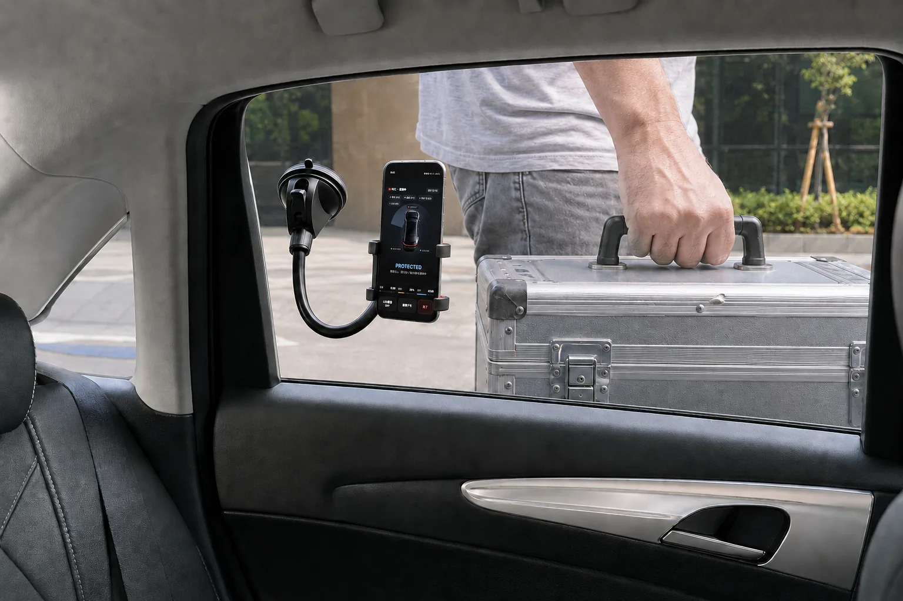
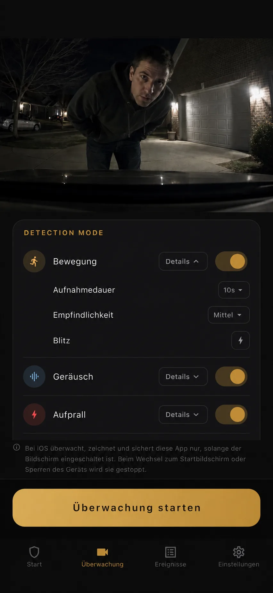
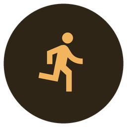
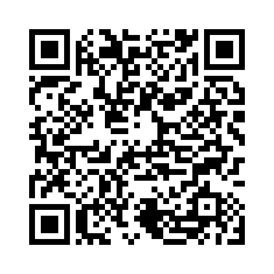

Keine Verkabelung
Lege ein ungenutztes Smartphone ins Auto und starte die Überwachung, ohne Kabel durchs Fahrzeug zu verlegen.
BlackShisa speichert lokale Clips, wenn Bewegung, Geräusch oder Erschütterung am Fahrzeug erkannt wird.
Beginne ohne feste Verkabelung oder Fahrzeugumbau und berücksichtige dabei offen die Grenzen einer Smartphone-Kamera.
Einfach starten
Eine spezielle Dashcam mit Parkmodus kann die Anschaffung eines Geräts, Verkabelung, Zubehör für die Stromversorgung, Einbaukosten und fahrzeugspezifische Einstellungen erfordern. Mit BlackShisa - Parking Dashcam App startest du die Parküberwachung einfach mit einem Smartphone, das du bereits hast.
Lege ein ungenutztes Smartphone ins Auto und starte die Überwachung, ohne Kabel durchs Fahrzeug zu verlegen.
Keine Änderungen am Fahrzeug und kein Werkstatttermin. Du kannst das Smartphone jederzeit in ein anderes Auto mitnehmen.
Mit einem ungenutzten Smartphone und einer einfachen Halterung kannst du schnell starten. Für längere Überwachungszeiten nimmst du bei Bedarf eine Powerbank dazu.
Beweise sichern
BlackShisa - Parking Dashcam App nutzt ein Smartphone, das du nicht mehr täglich brauchst, um brauchbare Clips und Standbilder rund um den Vorfall zu sichern. Der Vorteil liegt nicht nur im Preis, sondern darin, dass du ohne feste Installation starten kannst.
Parkmodus-App
BlackShisa - Parking Dashcam App erklärt, wie ein ungenutztes Smartphone bei Parkremplern, Türdellen und Vandalismus als Parküberwachungs-App helfen kann.
Ratgeber zur Parküberwachung
Jeder Ratgeber löst ein anderes Problem: Parkschäden, Türrempler, Vandalismus, Auslöser, iPhone- und Android-Unterschiede, Akku und Sicherheit.


So funktioniert es
Lege oder befestige das Smartphone im Innenraum so, dass es den Bereich erfasst, in dem Türdellen, Parkrempler und Vandalismus am wahrscheinlichsten sind. Kabel, Einbau oder Änderungen am Fahrzeug sind nicht nötig.
Wähle Bewegung, Ton, Erschütterung oder eine Kombination daraus. Jeder Erkennungsmodus hat drei Empfindlichkeitsstufen. Um Akku zu sparen, kannst du die Kameraansicht ausschalten oder den gesamten Bildschirm abdunkeln.
Bei einer Erkennung speichert BlackShisa - Parking Dashcam App ein Standbild des Moments und startet das Video 3 Sekunden vor dem Ereignis. Die Aufnahme nach der Erkennung kann auf 10, 30 oder 60 Sekunden eingestellt werden.
Ereignisse bleiben offline verfügbar. Speichere Bild oder Video in Fotos, nutze optional Google-Drive-Backup oder erhalte Gmail-Benachrichtigungen.

Erkennung
Parkplätze sind unberechenbar. Eine nützliche Parkkamera-App sollte auf mehr als ein Signal reagieren. Deshalb kannst du Bewegung, Ton und Erschütterung in BlackShisa - Parking Dashcam App separat einstellen. Auf Wunsch kann BlackShisa - Parking Dashcam App im Moment der Erkennung eine Benachrichtigung an deine Gmail-Adresse senden.

Überwacht das Kamerabild auf menschliche Bewegung und nutzt Verarbeitung auf dem Gerät, um relevante Veränderungen in der Szene zu erkennen.
Nutzt das Mikrofon des Smartphones für laute Kontakt- oder Unfallgeräusche ebenso wie für leisere Geräusche wie Stimmen oder Gespräche.
Nutzt die Bewegungssensoren des Smartphones, um Stöße, Rucke oder Kontakt zu erfassen. Wenn du die App wie eine Dashcam nutzt, kannst du die Empfindlichkeit auf niedrig stellen, damit normale Fahrvibrationen seltener auslösen.
Wenn ein ausgewählter Erkennungsmodus auslöst, kann BlackShisa - Parking Dashcam App das Smartphone-Blitzlicht mit maximaler Helligkeit blinken lassen. Du entscheidest, welche Erkennungsmodi den Blitz auslösen dürfen.
Datenschutz von Anfang an
BlackShisa - Parking Dashcam App ist auf lokale Beweisspeicherung ausgelegt und kann daher offline genutzt werden. Parkvideos können auf deinem Smartphone gespeichert oder automatisch in Google Drive gesichert werden. Nirgendwo sonst werden sie gesendet.
Klare Grenzen
Eine vertrauenswürdige Parkbeweis-App erklärt nicht nur, was sie kann, sondern auch ihre Grenzen.
Aufgrund der iOS-Regeln funktioniert die Überwachung nur, solange die App geöffnet bleibt. Wenn du zum Home-Bildschirm zurückkehrst oder das Display sperrst, stoppt die Überwachung.
Empfohlen ist die Nutzung beim Essen, Einkaufen, bei Erledigungen oder auf Wohnanlagen-Parkplätzen. Lange Nutzung in einem heißen Auto im Sommer wird nicht empfohlen.
Auf Geräten mit wenig Arbeitsspeicher (2 GB oder weniger) reduziert BlackShisa - Parking Dashcam App automatisch die Aufnahmelast, etwa durch kürzere Vorlaufaufnahme und Standardqualität.
FAQ
Kurze Antworten für Fahrer, die BlackShisa - Parking Dashcam App mit Dashcam-Parkmodus, Smartphone-Kamera-Apps und allgemeinen Auto-Sicherheits-Apps vergleichen.
Nein. BlackShisa - Parking Dashcam App senkt die Einstiegshürde für Beweise rund um geparkte Autos mit einem zusätzlichen Smartphone. Für Daueraufzeichnung während der Fahrt oder über Nacht kann eine spezielle Dashcam weiterhin besser geeignet sein.
Für Parkrempler, Türdellen, Vandalismus, verdächtigen Kontakt und Aufbruchversuche, bei denen ein Videoclip oder Standbild helfen kann, den Ablauf zu klären.
Ja. Beweise werden zuerst lokal gespeichert. Internet wird nur für optionales Google-Drive-Backup oder Gmail-Benachrichtigung benötigt.
BlackShisa - Parking Dashcam App unterstützt Englisch, Deutsch, Spanisch und Japanisch.
Preis
BlackShisa - Parking Dashcam App kann für €7.99 pro Monat genutzt werden.

Scanne den QR-Code oder öffne Google Play auf deinem Android-Gerät.
Bei Google Play herunterladenDie iPhone-Version folgt in Kürze.